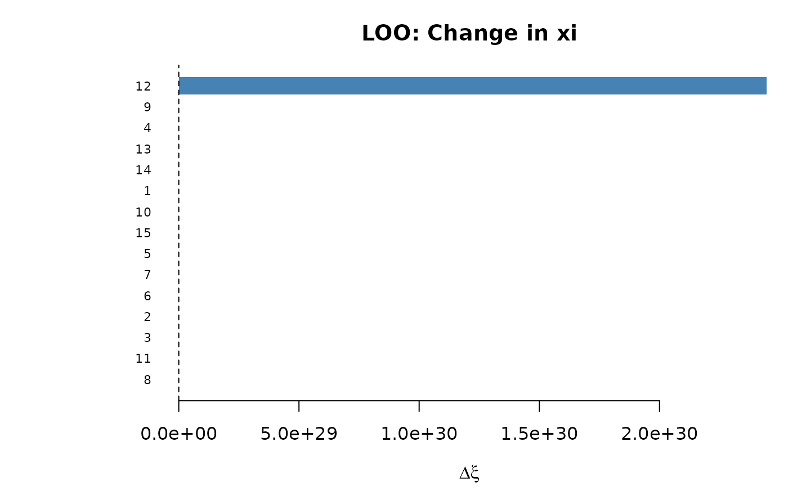
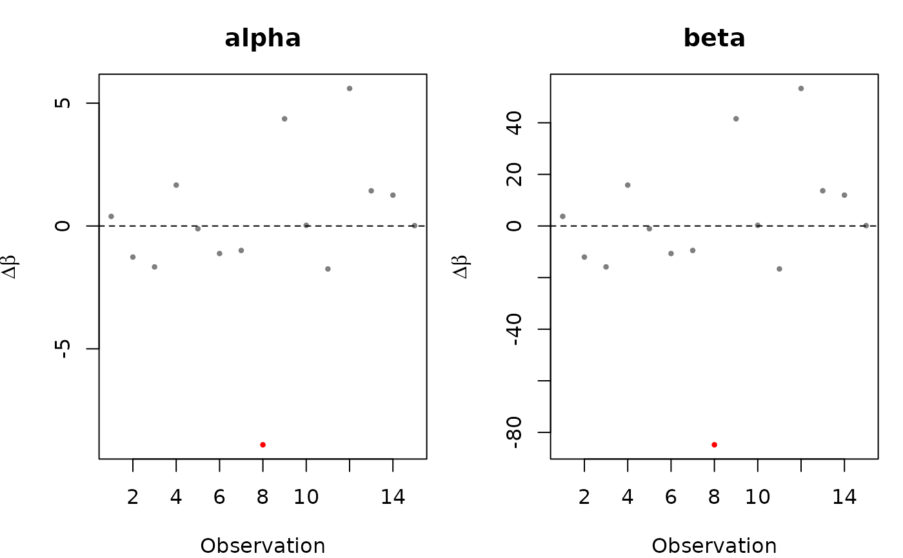

Refits the model dropping one observation (or one country/group) at a time. Returns the impact on coefficient estimates, fitted values, and \(\xi\) (total population size estimate).
Usage
loo(object, ...)
# S3 method for class 'uncounted'
loo(object, by = c("obs", "country"), verbose = FALSE, ...)Value
An object of class "uncounted_loo" with components:
- coefficients
Matrix (
n_dropsxp): coefficients from each refit.- xi
Data frame with \(\xi\) estimates from each refit.
- dropped
Character vector: label of dropped observation or country.
- dfbeta
Matrix (
n_dropsxp): change in coefficients \(\hat{\beta}_{(-i)} - \hat{\beta}\).- dxi
Numeric vector: change in population size \(\hat{\xi}_{(-i)} - \hat{\xi}\).
- full_coefs
Full-model coefficients.
- full_ps
Full-model population size data frame.
- full_ps_total
Full-model total \(\hat{\xi}\).
- by
The
byargument used.- converged
Logical vector: whether each refit converged.
- n_drops
Number of leave-one-out iterations.
Details
Purpose. LOO sensitivity analysis assesses how much each observation (or country) influences the estimated population size. An observation with a large \(|\Delta\xi|\) relative to the full-model \(\hat{\xi}\) is "influential" and may warrant closer inspection.
by = "obs" vs by = "country". With by = "obs",
each row is dropped individually (n refits). This identifies individual
data points that drive the estimate, useful for detecting outliers or
data errors. With by = "country", all rows belonging to one
country are dropped simultaneously (one refit per country). This measures
each country's overall contribution to \(\hat{\xi}\) and is more
relevant for assessing structural sensitivity: would the conclusion
change if a country were excluded?
Interpretation of dxi. \(\Delta\xi_i = \hat{\xi}_{(-i)} -
\hat{\xi}\): the change in total estimated population when observation
(or country) \(i\) is removed.
\(\Delta\xi_i < 0\): dropping \(i\) decreases the estimate (observation was pulling the estimate up).
\(\Delta\xi_i > 0\): dropping \(i\) increases the estimate (observation was pulling the estimate down).
Examples
# Simulate synthetic data
set.seed(42)
n_obs <- 15
sim_data <- data.frame(
country = rep(paste0("C", 1:5), each = 3),
year = rep(2018:2020, 5),
N = rpois(n_obs, lambda = 500000),
n = rpois(n_obs, lambda = 1000),
m = rpois(n_obs, lambda = 50)
)
fit <- estimate_hidden_pop(
data = sim_data, observed = ~m, auxiliary = ~n,
reference_pop = ~N, method = "poisson",
countries = ~country
)
#> Warning: Some alpha values < 0 (min = -0.467). Consider using constrained = TRUE.
# LOO by observation (drops one row at a time)
loo_obs <- loo(fit, by = "obs")
#> Warning: Some alpha values < 0 (min = -0.076). Consider using constrained = TRUE.
#> Warning: Some alpha values < 0 (min = -1.732). Consider using constrained = TRUE.
#> Warning: Some alpha values < 0 (min = -2.133). Consider using constrained = TRUE.
#> Warning: Some alpha values > 1 (max = 1.198). Population size estimates may be unreliable. Consider using constrained = TRUE or simplifying cov_alpha.
#> Warning: Some alpha values < 0 (min = -0.579). Consider using constrained = TRUE.
#> Warning: Some alpha values < 0 (min = -1.587). Consider using constrained = TRUE.
#> Warning: Some alpha values < 0 (min = -1.463). Consider using constrained = TRUE.
#> Warning: Some alpha values < 0 (min = -9.373). Consider using constrained = TRUE.
#> Warning: Some alpha values > 1 (max = 3.897). Population size estimates may be unreliable. Consider using constrained = TRUE or simplifying cov_alpha.
#> Warning: Some alpha values < 0 (min = -0.44). Consider using constrained = TRUE.
#> Warning: Some alpha values < 0 (min = -2.215). Consider using constrained = TRUE.
#> Warning: Some alpha values > 1 (max = 5.131). Population size estimates may be unreliable. Consider using constrained = TRUE or simplifying cov_alpha.
#> Warning: Some alpha values < 0 (min = -0.453). Consider using constrained = TRUE.
print(loo_obs) # top 10 most influential observations
#> Leave-one-out sensitivity analysis
#> Dropped by: obs
#> N iterations: 15
#> Converged: 15 / 15
#>
#> Full model xi: 0
#> LOO xi range: 0 to 2.444641e+30
#>
#> Most influential (by |delta xi|):
#> dropped dxi pct_change
#> 12 2.444641e+30 7.493902e+33
#> 9 2.260013e+23 6.927935e+26
#> 4 9.404481e+07 2.882888e+11
#> 13 4.440181e+06 1.361111e+10
#> 14 4.374037e+05 1.340835e+09
#> 1 5.100000e+00 1.566636e+04
#> 8 0.000000e+00 -1.000000e+02
#> 11 0.000000e+00 -1.000000e+02
#> 3 0.000000e+00 -1.000000e+02
#> 2 0.000000e+00 -1.000000e+02
summary(loo_obs) # coefficient and xi stability
#> Leave-one-out sensitivity analysis
#> Dropped by: obs
#> N iterations: 15 (converged: 15 )
#>
#> === Coefficient stability ===
#> full loo_mean loo_sd loo_min loo_max
#> alpha -0.467194 -0.538235 3.227945 -9.37336 5.131033
#> beta -7.287481 -7.963749 30.733370 -92.08695 46.003884
#>
#> === Xi stability ===
#> Full xi: 0
#> LOO mean: 1.629761e+29
#> LOO range: 0 to 2.444641e+30
#> Max |%change|: 7.493902e+33 %
plot(loo_obs) # bar plot of dxi

plot(loo_obs, type = "coef") # DFBETA plots per coefficient

# LOO by country (drops all rows for one country)
loo_ctry <- loo(fit, by = "country")
#> Warning: Some alpha values < 0 (min = -3.217). Consider using constrained = TRUE.
#> Warning: Some alpha values < 0 (min = -7.674). Consider using constrained = TRUE.
#> Warning: Some alpha values > 1 (max = 4.281). Population size estimates may be unreliable. Consider using constrained = TRUE or simplifying cov_alpha.
#> Warning: Some alpha values > 1 (max = 2.877). Population size estimates may be unreliable. Consider using constrained = TRUE or simplifying cov_alpha.
print(loo_ctry)
#> Leave-one-out sensitivity analysis
#> Dropped by: country
#> N iterations: 5
#> Converged: 5 / 5
#>
#> Full model xi: 0
#> LOO xi range: 0 to 3.012532e+25
#>
#> Most influential (by |delta xi|):
#> dropped dxi pct_change
#> C4 3.012532e+25 9.234739e+28
#> C5 2.996660e+17 9.186084e+20
#> C2 3.874100e+03 1.187578e+07
#> C3 0.000000e+00 -1.000000e+02
#> C1 0.000000e+00 -1.000000e+02